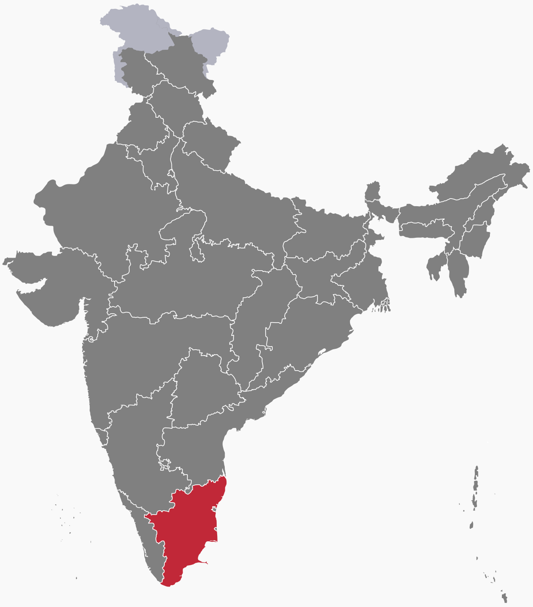

The Kollywood film industry makes movies in Tamil, and is centered in the state of Tamil Nadu in India. The word "Kollywood" is a mashup of the name of a Chennai neighborhood, Kodambakkam, and the word "Hollywood." The first movie was released in 1918, and it was silent. In Tamil Nadu, the official language is Tamil, so films are made generally with this audience in mind. Still, it is common to have appearances of actors from other states, as many actors work across industries. In fact, it pioneered the "pan-India film," whcih uses a diversity of actors from different backgrounds to create as large of an audience as possible.
As in other parts of India, Tamil actors are generally idolized and have large and devoted fan followings. Every few decades or so, a new actor comes out on top. One of the most famous Tamil actors is Kamal Haasan, who began to act when he was 14 in the year 1960. Another Tamil superstar from roughly the same time is Rajinikanth. Before these two, there were actors MGR, Sivaji Ganesan, and Gemini Ganesan, who are even more famous and iconic. Later, in the 80s and 90s came actors Vijay, Ajith, and Madhavan, also big stars. The 00s and 10s found even more actors like Dhanush and Suriya.


Many actors are only catapulted to fame after acting in a hit movie, even if they had good acting in a movie that flopped. Every era has its own hit movies, and some just never stop being culturally significant. As in other parts of South India, the "mass" film is common in Kollywood. These are the clips you see of unbelievable stunts being performed with one guy beating everyone up. These, if done tastefully, become natural hits, otherwise they are hits only because the actor is already very famous. More thoughtful and serious films are a hit-or-miss with the audience, but have the possibility to bring great success to everyone involved with the film. An example of a famous "mass" film would be "Ghilli" starring Vijay, and a more serious film that gained critical acclaim recently would be "Viduthalai Part 1" starring Soori. Some notable directors in Tamil cinema are T. Rajendar, Bharathiraja, Shankar, and Mani Ratnam.
All Tamil movies have at least one song. Historically, these songs have been based off of beats and melodies from South Indian classical music, known as Carnatic music. The most famous Indian music director of all time, Ilaiyaraja, and one of the most (if not the most prolific) Indian singers of all time SPB made use of this tradition. Before Ilaiyaraja was the music director T. Rajendar, who also utilized Carnatic music. With the arrival of A. R. Rahman, there was a transition from more traditional songs to something more modern, but still done tastefully and uniquely. After A. R. Rahman came Anirudh Ravichander, who shot to fame almost instantly for his "mass" intro songs and newer sound. There are complaints from fans of the older music directors that all his songs sound the same, but he has captured the hearts of the younger generation.